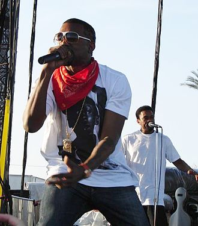

Kanye Omari West, né le 8 juin 1977 à Atlanta, en Géorgie, est un rappeur,
auteur-compositeur-interprète, producteur, réalisateur et designer américain, originaire de
Chicago,
dans l'Illinois.
West se fait remarquer à ses débuts, en qualité de producteur au label Roc-a-Fella, pour son
travail
sur l'album The Blueprint du rappeur Jay-Z, publié en 2001, ainsi que pour ses travaux auprès
d'artistes de renommée internationale tels que Ludacris, Alicia Keys ou Janet Jackson.
Son style de production se base souvent sur des samples de voix aiguës tirés de chansons de soul
mixés à ses propres compositions. Véritable touche-à-tout, il étend plus tard ses influences à
différents styles musicaux comme le RnB, le pop baroque, le trip hop, le rock alternatif, la
folk,
l'electronica, la musique industrielle, ou encore la musique classique.
West est né le 8 juin 1977 dans la ville d'Atlanta, en Géorgie4,5. Ses parents divorcent alors
qu'il
est âgé de trois ans, et part vivre avec sa mère à Chicago, dans l'Illinois6. Son père, Ray
West,
est un ancien membre des Black Panthers et le premier afro-américain à travailler pour l'Atlanta
Journal-Constitution. Ray West ouvre ensuite le Good Water Store and Café à Lexington Park, dans
le
Maryland.
La mère de West, Dr. Donda C. (Williams) West, est professeur d'anglais à la Clark Atlanta
University. West est élevé dans une famille de la classe moyenne, et étudie à la Polaris High
School11 d'Oak Lawn, dans l'Illinois, après son départ pour Chicago. À 10 ans, West emménage
avec
sa mère à Nanjing, en Chine, où elle devient professeure à l'Université de Nanjing dans le cadre
d'un programme d'échange. D'après sa mère, West était le seul étranger de sa classe, mais il
s'adapte rapidement en parlant le chinois, qu'il a oublié depuis. West confie avoir été bon
élève
au lycée.
West se consacre tôt à l'art ; il se consacre à la poésie à l'âge de 5 ans. Sa mère se rappelle
l'avoir aperçu se consacrer au dessin et à la musique lorsqu'il était en 3e grade. West
s'implique également et particulièrement dans la scène hip-hop. Il se lance dans la composition
musicale en 7e grade, et vend ses œuvres à d'autres artistes19.
Kanye West jouit d'une grande popularité auprès de ses fans mais également dans la presse people. En 2005, sa collaboration avec le chanteur Jamie Foxx sur le titre Gold Digger le révèle au public. Kanye West en 2010 En 2007, sa rivalité avec 50 cent suscite l’intérêt du public. Les stations de radios, les médias TV ainsi que la presse relaient les provocations de 50 Cent. Ce dernier avait déclaré qu'il allait arrêter sa carrière si son album Curtis était moins vendu que Graduation durant la première semaine. 50 Cent était à l'époque le plus gros vendeur de disques dans la catégorie hip-hop aux états-unis. Un timer (compte à rebours) est même affiché en bannière des sites spécialisés. Le rappeur finira par remporter le défi de 50 Cent et s'offrir une large publicité inespérée. Il est d’avis de beaucoup de spécialistes que c’est à ce moment que le hip-hop connaît une mutation. Le rappeur 50 cent prônait le Gangsta Rap, musique urbaine très connoté revendiquant l’argent facile, la luxure et les délits de droits commun. 50 Cent s’était illustré comme le représentant de cette nouvelle génération cependant sa défaite face à Kanye West aura un impact important sur sa carrière mais aussi sur le rap en général. Kanye devient dès lors, l’un des pionniers du changement de ce genre musical, le faisant évoluer en y incorporant des chants, des influences pop, électro, et le rendant plus mainstream.

Kanye est régulièrement tourné en dérision dans des mêmes internet. Il a également été longtemps
au centre de théories du complot le disant adepte des illuminatis tout comme Jay-Z ou Rihanna
l'ont aussi étés. Toutefois, le rappeur, amusé par ces théories complotistes, a démenti169.
En 2016, Kanye révèle, dans les morceaux Real Friends et No More Parties in L.A, avoir été
victime d’une extorsion de fonds par l’un de ses cousins qui le menaçait de dévoiler une autre
sextape du rappeur. Ce dernier avait subtilisé l’ordinateur portable de Kanye et celui ci avait
dû payer la somme de 250,000 dollars contre la restitution de l’appareil contenant des données
compromettantes.
Kanye West se revendique comme un penseur libre et manifeste régulièrement sa liberté
d'expression contre la dictature de la pensée. Il déclare avoir souvent été opposé à des
detracteurs adeptes de la pensée unique.
En novembre 2018, il fait don de 500,000 dollars aux pompiers de Los Angeles après la vague de
destruction engendrée par l'incendie qui a frappé la Californie.
Le 12 octobre 2019 lors d'une visite à l'université Howard à Washington, Kanye West annonce
s'être converti de nouveau au christianisme et exprime sa volonté de vouloir s'absoudre de tout
ce qu'il a pu représenter par le passé en prêchant régulièrement au cours de cultes
dominicaux. Kanye west est chrétien évangélique. Il a été rapporté que Kanye eut été
transformé par ses convictions religieuses. Son pasteur Adam Tyson déclarera d’ailleurs que ce
dernier avait songé à arrêter la musique mais qu’il avait finalement décidé de produire
uniquement de la musique religieuse à présent.